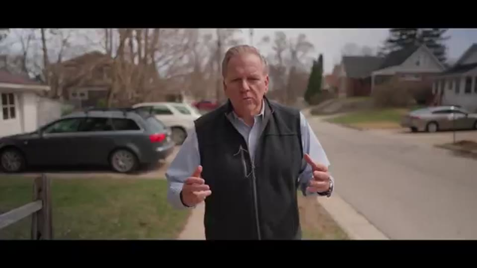
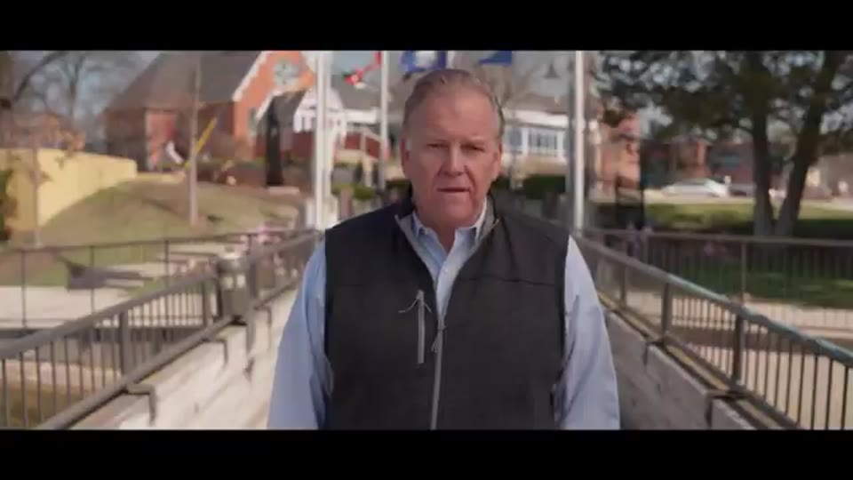
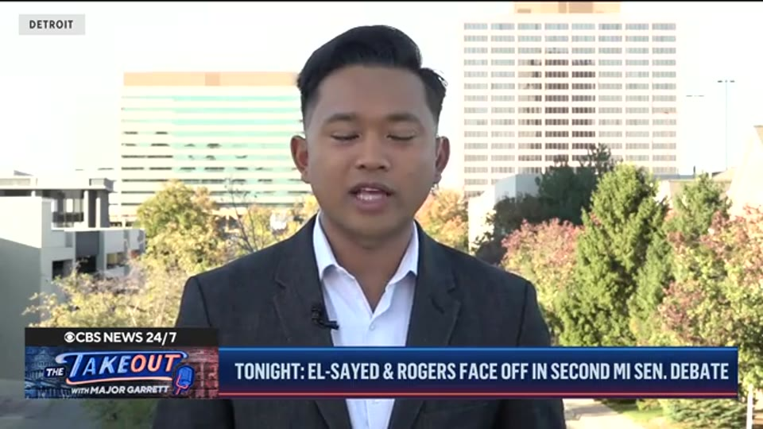

视频 / Video
视频来源 / Video sources
Mike Rogers announces 2026 Senate campaign
FOX 17 WXMI · 20250414 · 116s · 5/6 frames with faces
Mike Rogers and Abdul El-Sayed speak out on Senate race before 2026 Michigan election resu
USA TODAY · 20261103 · 210s · 11/12 frames with faces
El-Sayed and Rogers facing off in 2nd Michigan Senate debate
CBS News · 20261021 · 104s · 12/12 frames with faces
关键帧与人脸识别 / Keyframes and face identity
MI_rogers_launch


MI_elsayed_response
MI_debate_clip
